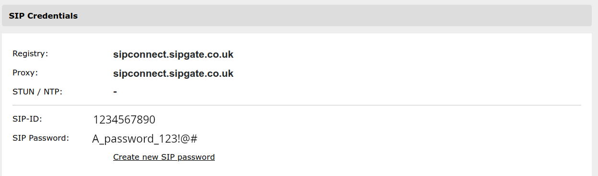

SIPGate integration¶
Trunk configuration¶
After you have created a Trunk using Sipgate’s interface and attached the required amount of phone numbers to it you will see the following block in the Trunk’s settings:
Based on these details we can start setting up the trunk using OdooPBX.
Go to PBX -> Applications -> Trunks and create a new trunk.
Make sure to fill in the following fields:
Host: sipconnect.sipgate.co.uk
SIP Secret: A_password_123!@#
Insecure: port,invite
From Domain: sipconnect.sipgate.co.uk
From user: 1234567890
Default user: 1234567890
Callbackextension: 1234567890
Outbound Proxy: sipconnect.sipgate.co.uk
DMTF Mode: RFC2833
Allow Codecs: ulaw,alaw
Disallow Codecs: all
Can Reinvite: No
Routing Configuration¶
Outgoing Route¶
Go to PBX -> Applications -> Routes and create a new route. Add the following fields:
Destination Number: _XXXXXXX. This means that any phone number with more than 7 digits will use the trunk. Change according to your requirements.
Type: SIP Trunk
SIP Trunk: Select the name of the trunk created in the previous steps
SIP Headers:
P-Preferred-Identity: <sip:${external_number}@sipconnect.sipgate.co.uk>
The last field, SIP Headers, is used for setting up the outgoing number that will be used.
If you are using only one phone number you can add it directly in the SIP Header.
Otherwise you need to set for every user his desired outgoing phone number.
For example if user Demo needs to use the phone number +123456789 go to his peer in
Applications -> Peers and click on the Advanced Settings tab and add the external
number variable as shown below:
Incoming Route¶
Go to PBX -> Applications -> Routes and click on Create. Next fill in the fields:
Destination number: The phone number, without the + sign
Type: Can be Extension or Dialplan
Select the dialplan or extension you want to redirect the call to.